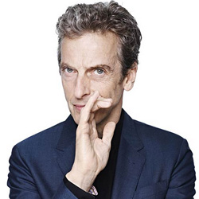

| HOME | The Doctors | The Companions | The Villians |
|
|||
The Doctors
|
The Tenth DoctorDoctor Who returned to British screens in 2005, with Christopher Eccleston playing the role of the Ninth Doctor in the first series. Tennant replaced him as of the second series, making his first, brief appearance as the Tenth Doctor in the episode "The Parting of the Ways" (2005) at the end of the regeneration scene, and also appeared in a special 7-minute mini-episode shown as part of the 2005 Children in Need appeal, broadcast on 18 November 2005. He began filming the new series of Doctor Who in late July 2005. His first full-length outing as the Doctor was a 60-minute special, "The Christmas Invasion", first broadcast on Christmas Day 2005.
Tennant had been formally offered the role of the Doctor during rehearsals for The Quatermass Experiment. Although the casting was not officially announced until later in April,[19] both castmates and crew became aware of the speculation surrounding Tennant; in the live broadcast Jason Flemyng (Quatermass) changed his first line to Tennant's Dr Briscoe from "Good to have you back Gordon" to "Good to have you back Doctor" as a deliberate reference.[20] Tennant has expressed enthusiasm about fulfilling his childhood dream. He remarked in a radio interview: "Who wouldn't want to be the Doctor? I've even got my own TARDIS!" In 2006, readers of Doctor Who Magazine voted Tennant "Best Doctor" over perennial favourite Tom Baker.[21] In 2007, Tennant's Doctor was voted the "coolest character on UK television" in a Radio Times survey. When Tennant was cast as Eccleston's successor, he had wanted to use his native Scottish accent and become "the first kilted Doctor" according to an interview in the Daily Star, but writer Russell T Davies did not want the Doctor's accent "touring the regions", so he used Estuary English instead.[22] Tennant was able to use his Scottish accent during his time on the series, however, when the Doctor briefly masquerades as "Dr Jamie McCrimmon" of Edinburgh in Tooth and Claw – a nod to the Second Doctor's companion. |